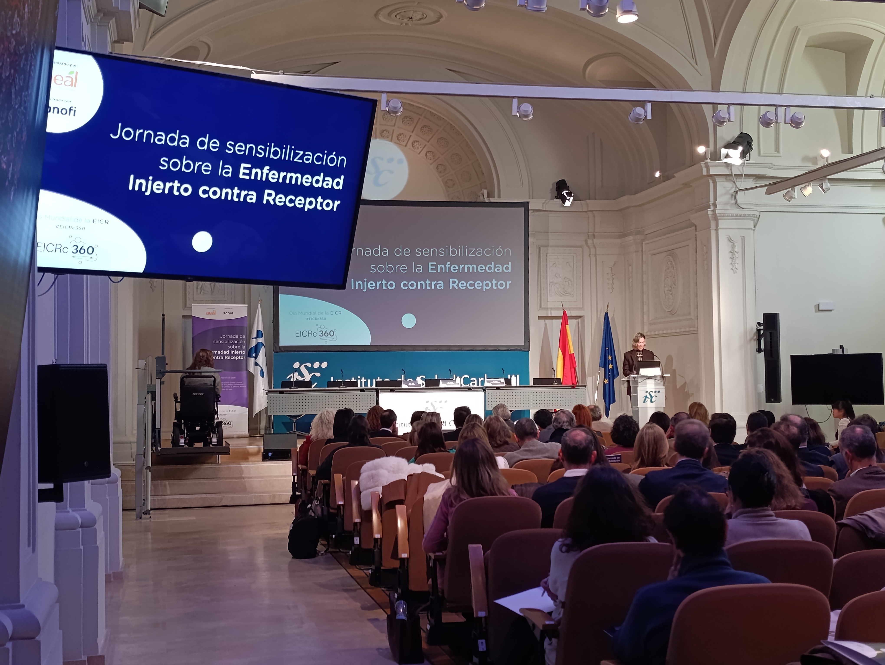

La Enfermedad de Injerto contra Receptor Crónica (EICRc) sigue siendo una realidad poco visible pese a su impacto profundo en la vida de miles de personas tras un trasplante de médula ósea. Con motivo del Día Mundial de la EICR, la Asociación Española de Af...
La EICR crónica: una enfermedad invisible tras el trasplante de médula ósea que requiere un abordaje integral
La Enfermedad de Injerto contra Receptor Crónica (EICRc) sigue siendo una realidad poco visible pese a su impacto profundo en la vida de miles de personas tras un trasplante de médula ósea. Con motivo del Día Mundial de la EICR, la Asociación Española de Afectados por Linfoma, Mieloma y Leucemia (AEAL) ha celebrado una jornada de sensibilización para poner el foco en esta patología rara, grave y multiorgánica, y reclamar un abordaje integral y multidisciplinar en todo el territorio nacional.
España es referente internacional en trasplantes de médula ósea, un procedimiento que ofrece una oportunidad de curación a miles de pacientes cada año. Sin embargo, cerca del 40 % de las personas trasplantadas desarrolla EICR crónica, una enfermedad que aparece cuando las células del donante atacan los tejidos del receptor, provocando inflamación y fibrosis en distintos órganos. Se trata de la principal causa de morbilidad y mortalidad tardía tras el trasplante y supone un importante deterioro de la calidad de vida. El impacto físico, emocional y social de la EICR crónica es especialmente significativo. Según los datos expuestos durante la jornada, el 65 % de los pacientes presenta limitaciones físicas, solo el 22 % consigue reincorporarse al trabajo y, de estos, el 92 % lo hace con importantes restricciones. Además, seis de cada diez personas afectadas consideran que se trata de una enfermedad incomprendida que no recibe la atención social ni sanitaria que necesita.
Reivindicar la EICR crónica como enfermedad Uno de los principales mensajes lanzados desde AEAL es la necesidad de que la EICR crónica sea reconocida como una enfermedad en sí misma, y no únicamente como una complicación o secuela del trasplante. En este contexto, la asociación ha impulsado un manifiesto para reclamar mayor visibilidad, diagnóstico precoz, más investigación y un acceso equitativo a nuevas terapias, que ya ha superado las 2.000 firmas de profesionales sanitarios, pacientes y cuidadores. Durante la jornada, expertos clínicos subrayaron que el manejo de la EICR crónica requiere comités multidisciplinares estables, capaces de ofrecer una atención coordinada que tenga en cuenta la afectación de múltiples órganos y las necesidades específicas de cada paciente. Asimismo, se destacó la importancia de implantar estos modelos de atención de forma homogénea en todo el país para evitar desigualdades.
La voz de los pacientes y el entorno La jornada dio un papel central a la experiencia de los pacientes y sus familias. Estudios presentados durante el encuentro muestran que el 82 % de las personas con EICR crónica debe modificar de forma significativa su día a día, y que la enfermedad impacta también en el entorno familiar, afectando a la salud mental y a la estabilidad económica, especialmente entre los pacientes más jóvenes. En este marco se presentó también la exposición “La piel como testigo: entre la vida y su herida”, una iniciativa artísticaimpulsada por ASOTRAME que busca visibilizar, desde una mirada humana, el impacto físico y emocional de la EICR crónica. La muestra pone rostro a las personas que conviven con esta enfermedad y contribuye a aumentar el conocimiento social sobre una realidad aún desconocida para gran parte de la población. Desde GEPAC valoramos especialmente este tipo de iniciativas, que refuerzan el papel del movimiento asociativo en la visibilización de enfermedades complejas y en la defensa de una atención más humana, equitativa y centrada en las personas, así como en el impulso a la investigación y a la mejora continua de los cuidados tras el trasplante.